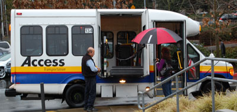

Events for Bridge Disability Ministries
Date |
Time |
Event & Location |
|---|---|---|
| May 9, 2015 | Sat 1-4 pm |
Newport Covenant Church 12800 SE Coal Creek Pkwy, Bellevue |
| June 7, 2015 | Sun 4-6 pm | Sunday Celebration 4400 86th Ave SE, Mercer Island |
| June 11, 2015 | 12 Noon - 1:30 |
Bellevue Presbyterian Church 1717 Bellevue Way, Bellevue |
For more information, call or email Denise at 425-885-1006 x 107.
Thank you to the following Churches for hosting SECs:
Calvin Presbyterian Church, Shoreline
Canyon Hills Community Church, Bothell
Crossroads Bible Church, Bellevue
Emmanuel Episcopal Church, Mercer Island
First Baptist Church, Kirkland
Highland Covenant Church, Bellevue
Holy Spirit Lutheran Church, Kirkland
Holy Trinity Lutheran Church, Mercer Island
John Knox Presbyterian Church, Seattle
Mercer Island Presbyterian Church, Mercer Island
Newport Covenant Church, Bellevue
Newport Presbyterian Church, Bellevue
Northshore Baptist Church, Bothell
St. Andrew Presbyterian Church, Renton
St. Andrew's Lutheran Church, Bellevue
St. John Vianney Catholic church, Kirkland
St. Margaret's Episcopal Church, Bellevue
Sunshine Ministries & Knights of Columbus
